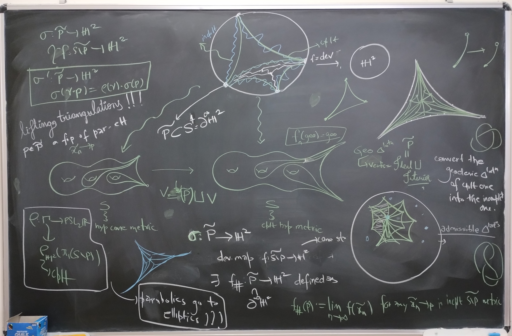
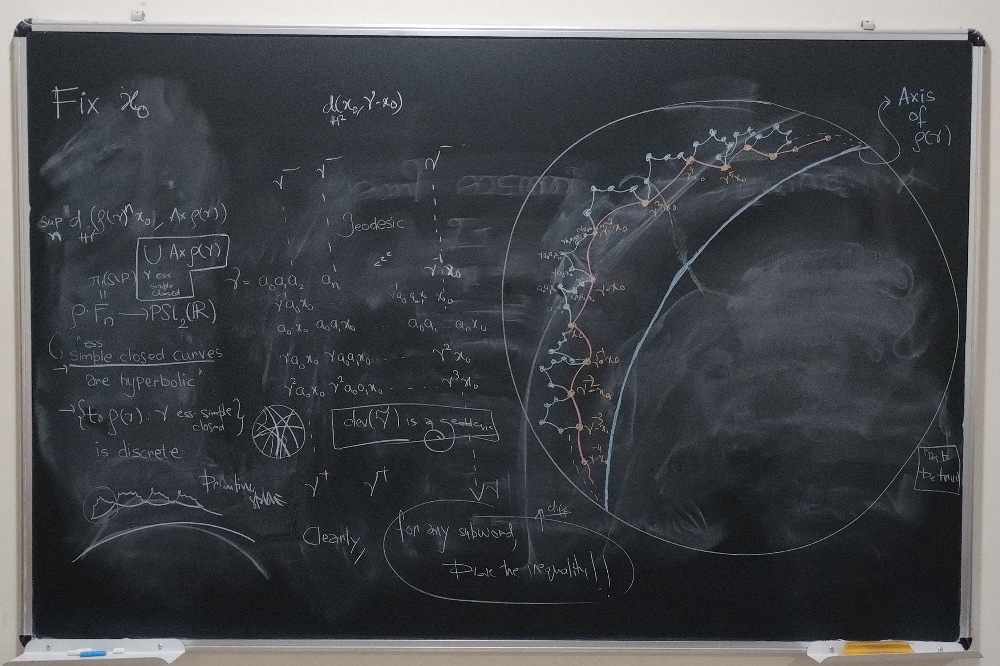
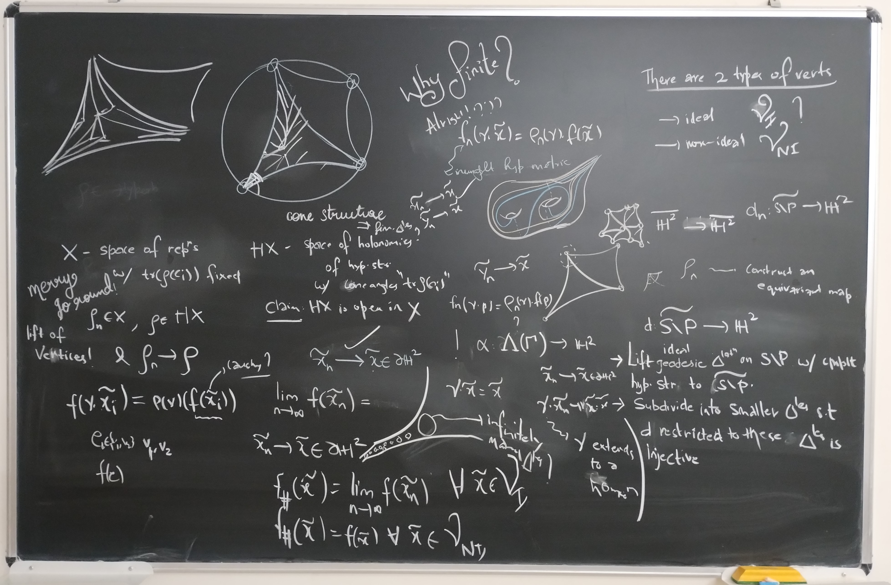

Research
Hyperbolic Geometry
Geometrization of PSL(2;R) representations
Conferences
- Geometry in Groups at ICTS Bangalore, Bengaluru, India. July - Aug 2024.
- Low Dimensional Topology at IISER Pune, Pune, India. Sept 2023
- 1,2,3: Curves, Surfaces and 3-Manifolds at Technion - Israel Institute of Technology,Haifa, Israel. May 2023
- Ergodic theory and Dynamical Systems at ICTS Bangalore, Bengaluru, India. Dec 2022
Talks
- When is a homotopy equivalence of a surface homotopic to a homeomorphism?, In House Student-PostDoc Symposium, IISc Bangalore. Apr 2024.
- On three theorems of Surface homeomorphisms, Prime Time Seminars, IISc Bangalore. Jan 2023
- On three theorems of Surface homeomorphisms (Online), IISER Bhopal Geometry and Topology Seminars. Nov 2022
- Conformal bijections, Biholomorphisms and Hyperbolic Isometries, Prime Time Seminars, IISc Bangalore. Nov 2021